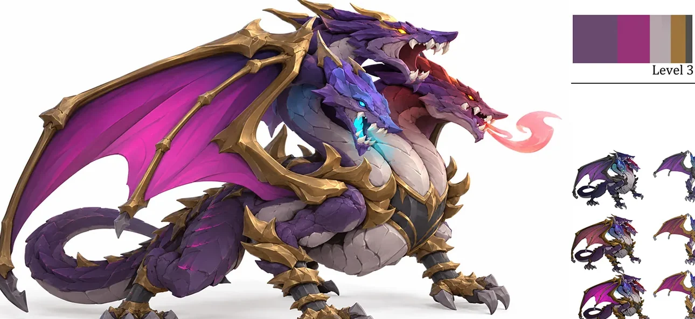

成都 · 游戏原画设计师
CHARACTER DESIGN / GAME ART
让角色
从设定
走进游戏.
我是熊宇枭。专注角色原画与视觉设定，能够从风格探索、角色设计到立绘与落地素材，建立清晰且有辨识度的游戏形象。
01 / 04向下探索作品集

FEATURED CHARACTERDragon of Fire and Frost角色设定 · 三视图
01 / 03
角色设定✦欧美卡通✦美宣视觉✦游戏 UI✦角色设定✦欧美卡通✦美宣视觉✦游戏 UI
01 / SELECTED WORK
精选作品03
从角色语言、结构拆解到游戏内呈现，展示不同项目中的设计思路与视觉方向。
从一个轮廓、一套配色，到玩家真正记住的角色。
02 / PORTFOLIO
作品画廊
角色原画为主，也包含风格化素材、美宣视觉与游戏 UI。点击作品可查看大图。
03 / ABOUT
关于我
持续参与游戏美术项目，关注角色造型的辨识度，也关注设计在实际产品中的可用性。
角色原画角色皮肤立绘欧美卡通美宣视觉游戏 UI
从设定到落地
经历涵盖角色原画、皮肤、立绘、道具图标与 UI。可根据项目风格切换视觉语言，配合策划、动画与研发完成素材交付。
工作方式
熟悉 AI 辅助探索与出图工作流，并将其用于概念发散和效率提升。作品中涉及 AI 辅助概念设计的内容已明确标注。
2018 — 至今游戏美术相关工作经验
现居成都目标岗位：游戏原画设计师
04 / EXPERIENCE
工作经历
角色设计、立绘与游戏视觉制作经验，覆盖休闲游戏与中度手游项目。
2026.06 — 至今当前
卓瀚科技
中度手游美术相关工作审核、UI 原画制作。
2021.05 — 2022.12角色原画
龙渊网络
角色设计、角色皮肤设计、立绘制作，并与不同部门对接确保画面落地。
2018.03 — 2021.04设计与制作
游戏角色原画经验
参与角色立绘、动画关键帧、场景小物件和游戏图标绘制。
LET'S TALK
一起创造
下一个角色.
游戏原画设计师岗位与项目合作，欢迎联系。